13.7米毫米波望远镜
2006-2007观测季节状态报告
( Status Report on the 13.7m Mm-Wave Telescope for
The 2006-2007 Observing Season )
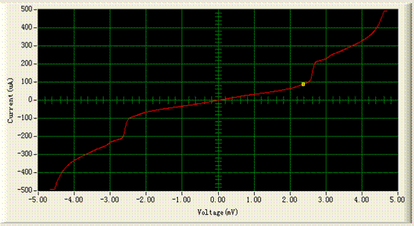
中国科学院紫金山天文台青海射电天文观测站
德令哈毫米波观测基地
2006年11月
一，望远镜系统概况及夏季维护与更新改造情况
在2006年夏季（7 ？ 9月）维护更新季节，对13.7米毫米波望远镜面板进行调整，继续保持70微米的面板调整精度。对天线机械传动系统进行了常规检修和维护，对低速齿轮箱进行了大修。对副面进行了拆装维修，解决了副面Z3轴存在的前后晃动和转动间隙等问题，为副面主动控制提供了高的机械精度保证。对天线罩蒙皮进行了整体维护。铲除天线罩蒙皮铝合金骨架间的旧胶，重新胶合，增强了天线罩的密封性。
对副面位置随俯仰的变化情况进行了详细测试，测试结果用于副面主动控制。在对接收机波束进行测量的基础上，改善了激光定位，使接收机与天线的光学耦合情况进一步改善。以上两项措施使望远镜在不同俯仰角度获得更好的主-副面耦合，提高了成像质量。新建了天线运行环境测试系统。用天文调焦的方法对副面位置随环境参数变化进行了测试。有关工作将在今后继续进行。
与毫米波实验室合作，研制了新一代数字式SIS混频器偏置电源。新的数字电源提供的高稳定度和计算机控制界面将为SIS接收机在运行过程的工作点优化调整提供便利。按照抗干扰要求对接收机系统进行了重新布线，从一定程度上改善了整个系统的工作稳定性。解决了调制状态下调制信号与参考信号相位差变化较大的问题，提高了该工作 状态时获取数据的可靠性、准确性和精度，提高了指向数据的信噪比。引入了前置黑体定标装置，为观测用户提供了带有常温黑体校准的“波束调制观测”模式。这种模式对小尺度的源可以获得更好的观测效果。对控制程序进行了优化升级。引入了GPS时间频率标准设备。对望远镜指向模型进行了修改，新的指向模型包含10项参数。
在9月3日前基地陆续完成了夏季的各项维护（检修、更新）计划项目。从9月4日开始，基地对望远镜进行了为期一个半月的“综合性能的天文测试”工作，包括对指向跟踪、系统稳定性、连续谱和谱线五点指向、方向图及天线效率测试、声光频谱仪定标、观测过程优化、天体谱线标准源的强度与视向速度、观测成图效率等。
为了适应观测课题的需要，基地与实验室合作新研制了宽带高分辨数字FFT频谱仪及相关的IF配套系统。该频谱仪的带宽为1 GHz，通道数为16384。2006年6月，研制的频谱仪在13.7米望 远镜上进行了实验观测并取得了成功。结果表明，该数字频谱仪在带宽、频谱分辨本领、动态范围、稳定性等关键技术指标上都有新的突破。这种频谱仪对河外星系的谱线接收、高分辨谱线观测以及深度积分的谱线观测等极限观测项目显示出新的使用潜力。预计该频谱仪将在本观测季节稍后一段时间投入实际的天文观测。有兴 趣使用该频谱仪的研究人员请关注相关进展。
以下简要报告维护、更新、测试等方面的主要工作和结果。
（1），天线面板调整[1]。继续通过合同方式，由南京中科天仪中心主持对望远镜天线机械系统进行了维护检修。天线主反射面的面板经过四轮测调后，480个面板调整靶点全都达到了误差在3″以内，经照明加权的主反射面面板误差为70 mm。望远镜最终效率还决定于该面板效率与波束传输、光学耦合、天线罩框架的遮挡等效率因子的乘积。
（2），天线主面机械系统检修 [2]。 继续通过合同方式，由南京中科天仪中心主持对天线的机械部分做了详细检修；重点对低速箱进行了检修，这是望远镜安装以来第一次对低速箱的大修。调整了低速箱和末级大齿轮的啮合与间隙，更换了部分轴承。对所有轴承、齿轮进行了清洗、加油。检修的方位、俯仰低速箱与大齿轮啮合面积均超过90%，齿隙在0.13-0.16 mm范围，优于出厂时的指标。本年度的低速箱系统大修，连同04年的大齿轮的调整、05年的高速箱大修等一系列机械系统大修和重点维护到此基本完成。在正常使用和常规维护下，望远镜的机械传动系统可继续使用二十年以上。
（3），天线副面机械系统检修[3]。13.7米望远镜的副面是由美国整体进口的。由于技术的限制，以往基地对这部分了解不透彻，尤其玻璃钢反射面和支撑杆的连接处不清楚，也从未拆装过。去年在维护过程中，我们发现连接处有间隙并临时用弹簧拉紧的方法消除了间隙。今年与原制造商ESSCO公司联系，得到这部分的详细装配图。由南京天仪公司和青海站人员一起对对照图纸，对副面机械轴系结构进行了分析拆装，消除了反射面在Z3处晃动的间隙，解决Z3轴传动存在间隙的问题，对副面所有轴系的蜗轮箱和减速箱进行清洗加油，保证了副面位置可靠、传动系统工作正常。
（4），副面实时控制系统的完善[4]。为了使天线效率最大，进一步提高望远镜观测精度和成像质量，在上年的工作基础上，在本维护季节除了通过测试确定副面的位移量(Y轴)和偏转方向(Z1轴)随俯仰的变化关系外，还用天文方法进行了副面调焦，最终确定了副面与俯仰的对应关系[5]，依据这个关系对副面进行了实时控制，确保了望远镜在不同仰角下的效率最大。副面控制程序采用了PI控制量计算方法，减少了副面跟踪时间，为了便于副面调焦，增加了Z2、Z3轴的控制[6]。
（5），望远镜指向模型的改进。今年我们在原有7参数指向模型的基础上又增加了3个参数，IE, ECES, ECEC，分别考虑了副面EL修正以后对EL轴定位的误差 [7]，使得新指向模型在全天区域的适用性更好[8]。指向校准结果表明新的指向模型在全天区内的效果改善明显[9]。今年基地引进了由P. Wallace开发的Tpoint软件[10]。该软件是用于望远镜指向校准分析的专业软件，与基地原先自主开放的指向模型分析软件一起使用，互相验证望远镜的指向分析。
（6），新型SIS混频器数字偏置电源的研制和实际应用[11]。以往SIS混频器的偏置电源都为模拟电源。为了提高SIS接收机在日常运行中工作点调整的效率，并面向今后多像元接收技术的发展需要，今年基地提出了研制新型SIS混频器数字电源的概念并与实验室相关技术人员合作，设计和研制了新型全数字SIS混频器偏置电源。该偏置电源具有两个主要特色：具备恒压、恒流两种工作模式。SIS混频器采用恒压模式可明显改善混频器输出的稳定性，特别是低频段的稳定性（85―100GHz）。数字偏置电源提供了计算机控制接口，开发了SIS混频器I－V特性曲线的监视和工作点调整的远程操作软件界面。新型数字电源在夏季测试评估中获得了很好的效果[12]。设备从本季节开始投入实际应用。
（7），引进了HJ5434 GPS高稳晶振时间频率标准设备[13]，增加了望远镜时系信号的可靠性与精度。该设备选用低相噪、低漂移的恒温双槽高稳晶振，利用高精度授时型GPS 接收机对晶体振荡器的输出频率进行精密测量与校准，能输出更高准确度的频率信号（准确度<10-12），其长期稳定性和短期稳定度均优于一般铷钟的指标。新设备向望远镜的控制系统提供了日期、UTC时间和控制中断等信号。新设备提供的频率标准也被用于校准相关的测试仪器。
（8），控制程序优化工作。将跟踪程序的实时进程与非实时进程之间数据传输机制改为用共享内存传输的方式，解决了管道数据传输中的可靠性问题[14]。增加了进程间父子关系判断功能，增强了程序的可靠性，避免了操作失误[15] ；增加了进程在按ctrl+c方式下的正常退出机制。谱线观测程序中应用流程优化-Walsh函数，以便在长时间深度积分过程中消除n-1阶起伏 [16]。谱线观测程序中增加了用银道坐标成图的功能。为适应银道坐标成图，对制表程序进行了升级。
(9), 组织实施了望远镜天线罩的补漏工作[17]。 由于长期风吹日晒，天线罩老化，天线罩骨架连接处胶合失效，破损多，遇到下雨或下雪天线罩就会漏水。今年通过合同方式，由南京中科天仪中心主持对望远镜天线罩进行了整体铲胶和补胶、补漏，漏水处得到修复。此项工程也是为了更换已经到达使用寿命年限的天线罩蒙皮材料进行的一次前期施工技术准备。
二，望远镜性能的简要说明
1，天线及表面精度
德令哈基地毫米波望远镜口径为13.7 m (45英尺) ，使用地平式机架。望远镜的光学系统是经典卡塞格林系统，接收机工作在卡焦上。经过面板调整后的主反射面的表面精度为70 mm [1]。
2，望远镜的跟踪
控制系统采用位置反馈的PID控制量算法。 经过大量测试，获得了较好的控制量参数组合。测试表明，对绝大部分天区，天线的跟踪误差在1-3"左右，完全符合观测要求（根据望远镜的波束大小，观测时望远镜的跟踪误差允许范围也被限制在7"以内，以保证足够的跟踪精度）。图2.2.1为天线在AZ和EL两个方向的跟踪误差测试结果：
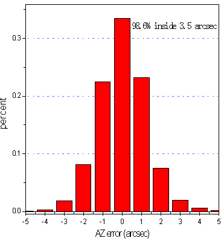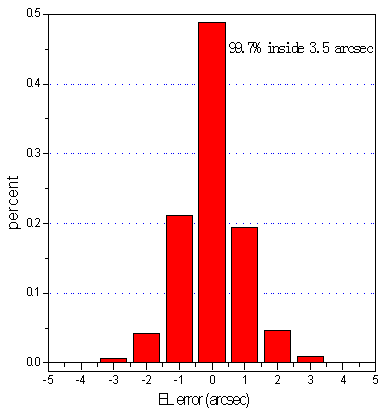
图2.2.1 方位和俯仰的跟踪误差统计分布图。方位98.8%在3.5角秒内，俯仰99.7%在3.5角秒内。数据取自参考资料[18]。
3，望远镜指向
采用“连续谱调制接收工作模式”对行星（木星和土星）进行“五点指向观测”，可得到望远镜行星指向模型。在此基础上，通过86.243 GHz处的SiO (v=1，J=2-1)谱线对R Cas、R Leo等脉泽源采用“谱线五点方法”进行全程（full-track）观测，对行星指向模型进行了验证。通过2-3天时间，取得300-500组观测数据后，用本年度修改的新指向修正模型[与TPoint中的一致]对这些数据进行拟合。观测源在全天的覆盖范围详见图2.3.1，得到望远镜的指向修正模型，图2.3.2是指向修正模型计算出的残差分布，代表望远镜的指向误差。结果显示，目前望远镜南天的指向误差(rms) 4.6″[9]；北天的指向误差 (rms) 为5.8″[19]。拟合得到的新的指向模型参数在与以往模型比对评估的基础上，通过新的一轮观测加以验证，并进一步积累观测数据，增加后继拟合的数据精度 [8,9]。在综合测试过程中，“指向观测à模型拟合à修改验证”的过程要进行多轮。重复测试的结果都显示望远镜全天指向精度为5″左右，处在望远镜波束宽度1/10的水平。
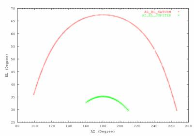
图2.3.1 连续谱五点观测时SATURN、JUPITER有效数据点在天空中的分布[8]。
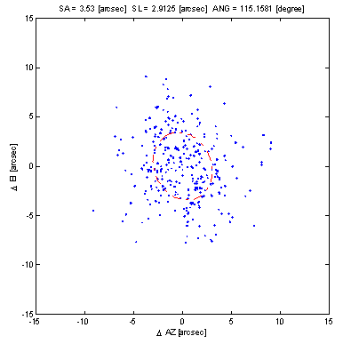
图2.3.2 南天五点强度拟合后得到的方位残差和俯仰残差的分布。指向误差分布椭圆的长半轴为3.53″，短半轴为2.91″，方向角为115.16o。数据取自参考资料[8]。
在综合性能测试阶段，望远镜对行星进行了充分的五点指向观测和验证；关于南、北天区的指向误差，特提醒观测者及进行北天天体目标研究的人员注意。
我们用行星指向修正模型对谱线标准源NGC2264和S140分别进行了全天的跟踪观测验证，结果表明，目前新的望远镜指向模型在全天的校准比较好。在望远镜运行阶段，指向状况还可以通过观测CO谱线点源（例如IRC+10216等晚期恒星）或者具有明显局部空间分布特征的部分CO面源（如S140等）来不定期地加以验证。
作为常规测试项目，在观测季节内，每个月还要进行一轮指向测试与验证，以便及时调整望远镜指向。
4，远镜的温标和效率参数（半功率波束宽度、方向图、月面效率、口面效率、波束效率）
在分子谱线观测中，本望远镜采用标准的斩波轮校准方法(Ulich & Haas 1976; ApJS, 30, 247及随后的文献)，给出的温标是改正了大气吸收及欧姆损耗以后的“天线温度”，也就是文献上的TA*。对于星际分子云展源，通常这个温标要进一步改正望远镜的主波束效率hmb，得到与同类望远镜可比的“观测辐射温度”TR*。这个温标代表望远镜的理想主波束与源空间亮温度分布的卷积。 在我们的原始数据中不进行波束效率改正。观测者在进行银河系分子云等面源观测中，得到源的天线温度后，需根据望远镜相应观测季节所公布的波束效率，按照 的关系计算TR*。注意：这里假定了hmb不随俯仰变化。
半功率波束宽度(HPBW)反映了望远镜的分辨本领。对于口径为D、工作波长为l的望远镜天线而言，HPBW=kl/D，系数k与天线口面的照明函数有关。通过谱线五点观测的数据拟合得到在112 GHz本振频率下，望远镜半功率波束宽度HPBW在方位方向为50±7角秒、俯仰方向为54±3角秒[9]。二维波束分布可以通过对天体的扫描加以测量。对木星扫描获得的二维扫描结果如图2.4.1。
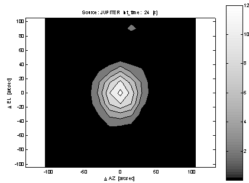
图2.4.1 望远镜二维方向图分布。对木星进行的15×15二维扫描，步长15″，每个点积分时间为2秒钟。采用绝对强度校准，数据用天线温度表示。数据取自参考资料[20]。
月面效率, hMOON, 是用来衡量望远镜对于“宽面源”的波束效率。在望远镜指向工作完成之后，对月面进行一维扫描，在考虑月相的修正以后，得到月面效率平均值为67.1±0.9%。见图2.4.2。
月面效率比采用行星测量得到的主波束效率要高，因为前者包含了主波束以外的部分“前向 (forward)” 旁瓣成份。在实际观测中，目标天体（分子云）的尺度通常大于望远镜的波束宽度，这时望远镜的波束效率相对地接近月面效率。但是这种接近往并不是观测者需要的，因为旁瓣接收了来来自观测方向以外的辐射。因此，对面源观测的射电望远镜，往需要更低的旁瓣。望远镜旁瓣越低，用行星测量得到的“主波束效率”越接近 “月面效率”。
图2.4.2 对月面一维扫描得到的强度分布。测量时接收机的本振频率设置为112 GHz，扫描范围±1500″, 步长15￠。观测时月相为-365.8°左右，月面亮温度318.2 K。数据取自参考资料[21]。
对于主要从事星际分子云等面源观测的望远镜而言，波束效率是一个重要的效率指标。测量望远镜主波束效率最恰当的方式是寻找一个与望远镜波束尺寸一致的天体来进行。但是，实际中并没有这样的天体（或人造）目标存在。因此，测量望远镜主波束效率是分别通过对月面、行星、谱线面源、谱线点源等目标的测量来进行。随 着前置黑体装置的正常工作，今年我们在进行五点指向观测的同时，将观测结果校准为温度，同时可以得到望远镜的波束宽度，然后计算得到望远镜的口面效率、主波束效率与俯仰余弦的关系[见图2.4.3和2.4.4]，结果如下：
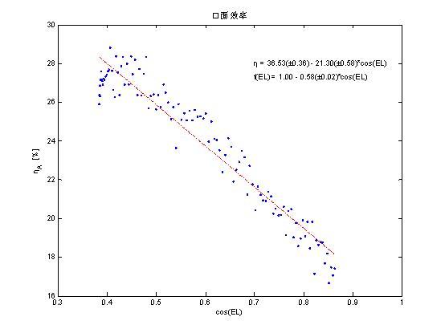
图2.4.3 望远镜口面效率与俯仰余弦的图示。通过对上图中数据的线性拟合，然后归一化，得到关系式：f(EL)=1-0.58(±0.02)cos(EL)。数据取自参考资料[22]。
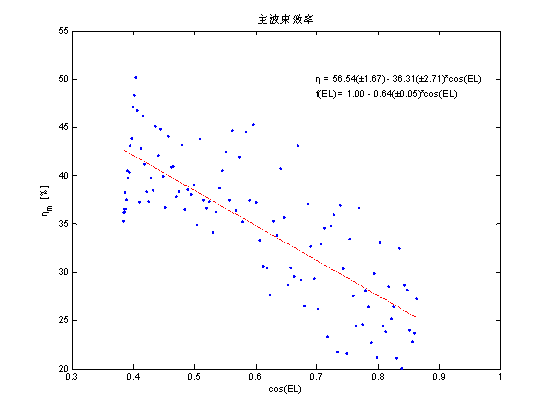
图2.4.4 望远镜主波束效率与俯仰余弦的图示。通过对上图中数据的线性拟合，然后归一化，得到关系式：f(EL)=1-0.64(±0.05)cos(EL)。数据取自参考资料[22]。
通过本次观测得到天顶方向望远镜主波束效率为56.5%，天顶方向望远镜口面效率为36.5%；
望远镜作为一个整体，对天体谱线标准源进行观测的数据精度通常用来反映天文观测能够达到的实际测量精度。在运行过程中，我们用该精度作为衡量整个望远镜仪器性能、工作状态、观测方法、以及数据归算处理等全过程的依据。
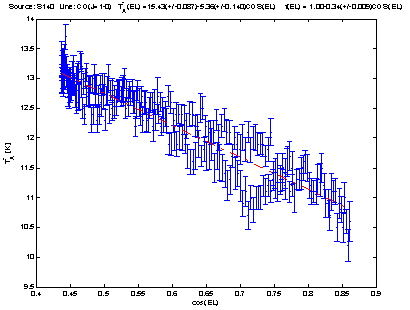
图2.4.5 北天谱线标准源S140峰值强度随俯仰的图示。通过对上图中数据的线性拟合，然后归一化，得到关系式：f(EL)=1-0.34(±0.009)cos(EL) 数据取自参考资料[23]。
由于天线面板的重力形变与光学耦合变化，观测得到的天线温度随俯仰有一定的依赖关系。在“综合性能的天文测试”阶段，对谱线面源S140、NGC2264进行了中心点全天观测，得到谱线峰值强度与俯仰的关系（见图2.4.5和2.4.6）。
通过校正了这一变化后，北天谱线标准源S140的12CO峰值强度的数据起伏（rms代表了最终可以得到的数据精度）降低到0.36 K，天线温度测量的相对精度达到2.36%。对其它谱线标准源的测量也表明，“俯仰效率关系”f(EL)以及相对精度与S140的观测结果基本接近。
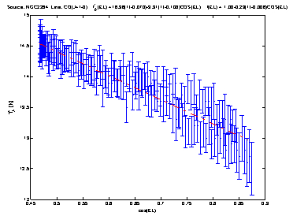
图2.4.6 南天谱线标准源NGC2264峰值强度随俯仰的图示。通过对上图中数据的线性拟合，然后归一化，得到关系式：f(EL)=1-0.23(±0.006)cos(EL)。 数据取自参考资料[23]。
根据毫米波谱线标准源的观测结果，得到天顶方向主波束效率的值[23]，如表2.4.1
表2.4.1
|
SOURCE |
TA* (K) |
hMB(EL=90o) （％） |
|
NRAO12M |
PMODLH(EL=90O) |
|
S140 |
26[a] |
15.43±0.09 |
59.3±0.3 |
|
NGC2264 |
24[b] |
16.36±0.07 |
68.2±0.3 |
[a]、这个温度值取自文献1978ApJ…219…896B；
[b]、这个温度值取自NRAO 12M网站；
基地建议观测者在进行课题观测的过程中适当选取待测目标源附近的谱线标准源定期（每1-2小时）地加以观测，或者利用待测源的某一特定位置（例如，中心点）作为相对标准，观测过程中在不同EL方向多次加以观测，建立对应的俯仰效率关系f(EL)。在此基础上，根据以下关系进行效率修正：
（1）
其中hmb是天顶方向的望远镜主波束效率。
5，接收机的参数[6]（频率工作范围、噪声温度、稳定性）
13.7米望远镜目前使用一台3 mm波段的SIS超导接收机。按照标准的波段设置要求，该波段的接收机工作频率范围在85-115 GHz。 使用中的接收机本观测季节在f(LO)= 85-115 GHz波段范围内接收机的噪声温度Trx的实测值为70-128 K(DSB)，而包含了地球大气噪声辐射贡献在内的“系统温度”Tsys的测量值分布在图2.5.1中显示。这些系统温度的数据有助于观测者估计项目所需要的观测积分时间和灵敏度。
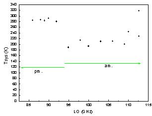
图2.5.1. 系统温度随接收机本振频率的分布。横坐标是接收机的工作频率， 纵坐标是双边带工作方式下测量的系统温度Tsys[DSB] (K)， 它包含了接收机、天线与光学系统、圆顶和蒙皮、以及地球大气的贡献。86—100 GHz区间混频器工作点调整在第2量子台阶上。本图中的数据测量时间是2006年8月（参考资料[12]）。本图的系统温度随工作频率的分布可用估计观测的积分时间。在冬季的相当时间范围内，由于气温普遍低于测试时间（9月份），因此，预计的系统温度值应当略低于本图的分布。
本观测季节，望远镜可以从事从85-115 GHz整个波段内的观测。 多次重复测量结果表明，单位小时内的系统相对稳定性DG/G￡ 6′10-3。图2.5.2显示了接收机在工作波段内的相对稳定性的典型测量结果。
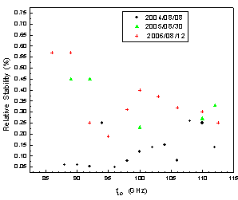
图2.5.2. 接收机中频总功率输出的相对稳定性随前端本振频率的分布。横坐标表示本振的工作频率，纵坐标表示每单位小时的总功率的相对起伏，用以度量接收机增益的相对稳定性。测量时间是2006年8月。为了比较，上图中也将2004、2005、2006年的相对稳定性用“黑色圆点”、“绿色三角”、“红色十字”表示。从图上可以看到，与上个观测季节相比，本季节在整个85-115 GHz频段内的接收机稳定性（绿色数据点）都达到￡ 6′10-3/hr的水平。
6，后端频谱仪的主要技术参数[24]（带宽、信道数、分辨率、稳定性）
从2002-2003观测季节开始，基地使用“3毫米波段多谱线系统”作为主要的接收后端。该系统是由科学院“九？五重大项目”支持并由毫米波技术实验室主持、基地参与研制。“3毫米波段多谱线系统”主要由宽带4路中频和3个AOS后端频谱仪组成，它同时可以接收在3毫米波段对天体物理重要的12CO (J=1-0)、13CO(J=1-0)、C18O(J=1-0)等3条星际分子谱线。多谱线系统的中频信号的中心频率为2.64 GHz、带宽为800 MHz。当本振频率设置在F(LO)=112.6 GHz时，同一个SIS超导接收机以上/下边带折叠方式同时接收12CO (J=1-0)、13CO(J=1-0)、C18O(J=1-0)等3条谱线，在第一本振频率跟踪的基础上，通过中频系统加以二次视向速度修正，多谱勒频率跟踪精度达到50 kHz（等价于0.1 km/s）。谱线中频信号处理由原来的1路更新为4路。对其中的3路，分别用1个带宽为145 MHz和2个带宽为43 MHz的3个新AOS频谱仪加以接收，使系统同时获得3×1024通道的谱线信息，中频的第4路作为总功率接收。经过测试，包含实际大气变化在内的系统整体Allen方差时标<60秒。数据采集系统采用了FPGA编程的AOS实时控制和数据采集系统，提供Quicklook界面和工业标准的IE488接口，操作使用方便。该系统在实现上、下边带3条谱线同时接收的基础上，也保留了观测单条谱线的功能，并且对频谱仪的选择提供了灵活性。
表2.6.1列出了这3个AOS后端的基本参数。望远镜实际运行中，仪器随工作环境的微小变化（例如温度变化）会导致表2.6.1中的参数也发生微小变化。观测基地要经常性地进行频率定标测试。在每次常规测试以后，最新的准确数值将在观测数据FITS文件中及时更新，以便保证数据中反映的参数是最新的。
表2.6.1望远镜频谱后端AOS的基本参数
|
后端名称 |
带宽（MHz) |
通道数 |
通道频率
分辨率(KHz) |
|
AOS-I（13CO）
（110.201353 GHz） |
42.691 |
1024 |
81.0±6.9 |
|
AOS-II（C18O）
(109.782183 GHz) |
43.077 |
1024 |
82.7±3.5 |
|
AOS-III（12CO）
(115.271204 GHz) |
145.337 |
1024 |
207.7±4.7 |
基于3条谱线的同时接收，“多谱线系统”使信号接收速率直接提高了3倍， 显著加强了望远镜的观测能力。利用“同时观测”的原理，多谱线系统在提高接收机稳定性的基础上，在很大程度上消除了毫米波段大气快速变化所带来的对信号强度的影响，提高了测量精度。与以往的系统相比，“多谱线同时观测”也提供了对观测流程的优化，使望远镜的成图观测效率提高2-3倍，其效果同样也增加望远镜的数据产出率。结合多谱线系统，望远镜的另一个显著的改善是引入实时斩波轮校准方法，使原始谱线的基线变得平整，这些谱线通常经过线性基线拟合以后就能够获得精确的谱线信息，使定标精度优于5%, 并使数据有效率提高1-2倍。图2.6.1示意的是三条谱线同时观测得到的原始谱线数据。
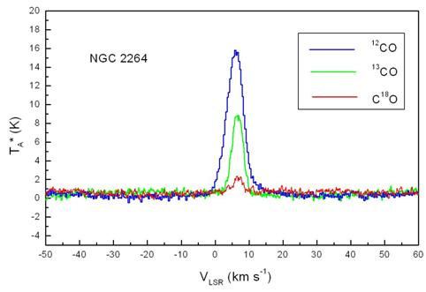
图2.6.1 “3毫米波段多谱线系统”一次（例）观测直接输出的NGC2264的12CO、13CO、 C18O(J=1-0)三条原始谱数据。横坐标是视向速度，纵坐标是天线温度。蓝线代表12CO谱，绿色线是13CO谱，红色线是C18O谱。观测的“在源积分时间”为60 sec，EL=43°，系统温度Tsys=248 K。数据未经过基线拟合, 从该图中可以看到，噪声水平与系统温度相对应，谱线的基线足够平整。
根据星际分子谱线的特定频率位置，观测者也可以在接收机工作波段的任何别的本振频率下选择这3个后端中的1至3个频谱仪来工作，并且可以根据大气变化情况和接收机工作状态选择最佳的本振工作频率和边带。观测CO以外谱线时，观测课题明确了观测频率的需求以后，观测者可以利用“谱线观测频率计算软件（Freqcalculator）”（在基地网页上下载）合理选取AOS，以便同时观测多条谱线，也可以向基地为该开放观测研究项目指定的观测助手咨询仪器设置和选项的具体方案。
7，观测模式
· 在接收机工作频率范围内，望远镜以双边带下的位置开关模式进行谱线观测，单点观测或者成图观测。
· 可以使用“多谱线系统”同时观测CO及其同位素的谱线。
· 谱线观测采用标准的斩波轮方法定标。
· 可以进行3 mm波段大气不透明度的测量。
· 可进行波束调制方式下的3 mm波段连续谱单点和成图观测。
8，成图(Mapping)的时间效率
成图观测(Mapping)是常用的面源观测方式，望远镜通过单一波束在空间的逐点扫描来覆盖一定的天区范围，获得三维(X-Y-Velocity)图象。除了系统温度决定的灵敏度或积分时间以外，观测过程中的天线跟踪移动、斩波轮开关、数据I/O等操作也导致一部分时间损耗。经过测试，目前Mapping模式下该时间效率因子为3 [25]。观测者在课题所需观测时间的计算中应将对源的时间总和乘以该因子，作为估算项目总时间需求的依据。
9，资料格式
控制系统输出数据为国际通用的标准FITS格式。头部信息中的关键字符合GILDAS/CLASS处理软件[注]的需要。用户可以使用GILDAS/CLASS等一些通用的射电谱线数据处理软件来进行处理。基地也提供将以往13.7米望远镜使用的DRAWSPEC格式转换为FITS格式的软件，通过基地网页下载。
[注]：GILDAS/CLASS是由法国Grenoble天文台与IRAM合作开发的射电天文数据处理软件。
三，开放观测课题的申请和日程安排
2005-2006观测季节，基地共完成了24件开放课题的观测，包括俄罗斯、韩国等国家和地区的课题。
2006-2007观测季节13.7米毫米波望远镜的对外开放观测服务从2006年10月27日起开始。该观测季节预计将在2007年6月结束。观测季节内望远镜24小时连续运行。2007年春节按照国家法定休假时间表望远镜暂停运行。2006-2007观测季节的基本时间安排如下：
2006.11-12 使用“3mm波段多谱线”系统的课题；
2007.01-03 使用“3mm波段多谱线”系统的课题；
2007.03-06 使用其它频率和观测模式的课题。
德令哈观测基地根据上述整体时间安排为对所接受的观测课题申请安排具体的观测时间并在项目观测的前2-4周通知项目PI。对每一项接受课题，基地将以正常的仪器状态积极协助天文学家完成观测。基地为每一个观测课题配备天文观测助手。通知观测课题的同时也为每个观测项目指派天 文观测助手。部分观测课题特别需要时，基地也接受委托观测。尽管如此，基地还是强烈建议：观测者（尤其是还不足够熟悉毫米波望远镜观测的研究人员及学生）能来基地参加观测，在了解毫米波射电天文观测的一般过程的同时，也有机会熟悉13.7米毫米望远镜的特点，把握观测数据的质量。
德令哈毫米波观测基地热情邀请国内外专家使用该望远镜从事天文和相关科学的观测研究。13.7望远镜常年接受观测课题申请。所有观测申请均由proposal@mail.pmodlh.ac.cn加以受理。观测申请的格式文本可以从基地网页下载。 申请的观测课题或者时间要求在出现竞争的情况下将完全经由“毫米波评议会”的专家根据申请项目的科学意义和项目可行性进行打分评议，确定优先级。毫米波评议会的专家目前由南京大学、北京大学、北京师范大学、上海天文台、以及国家天文台的同行专家组成，今后还将聘请一些海外同行专家担任“毫米波评议会”专 家。
德令哈基地13.7米毫米波望远镜最新状态信息将及时公布在基地网页：http://www.pmodlh.ac.cn上。
四，近几个观测季节内望远镜从事的观测课题举例
1，银河系分子云物理结构的探测；
2，年轻星的高速气体外流和动力学；
3，星际化学；
4，银河系恒星形成区内分子气体的分布；
5，银河系动力学；
6，超新星遗迹与星际介质相互作用、宇宙射线源；
7，恒星演化和晚型恒星的分子气体观测；
8，太阳系天体的分子谱线观测；
9，月球的毫米波辐射性质的观测研究；
10，地球大气的毫米波电波传播和辐射物理性质的观测研究；
五，使用望远镜进行观测
1，观测准备
观测者从科学目标出发，准备观测源的基本信息，包括目标源的坐标、速度、尺度、参考背景(reference)的坐标、所需要的探测极限和积分时间估计等。由于毫米波段大气辐射在EL方向的梯度显著，这种梯度制约了谱线观测的基线平整度。因此我们特别提醒，参考背景坐标的选取应尽量限制在距离目标源1°的范围内，以保证谱线基线有足够的平整度。
从2005-2006观测季节开始，为了在CO三条谱线观测之外的频率上方便地选择接收机工作频率，编制了《FreqCalculator》软件。观测者可在基地相关网页下载该程序来制定自己的观测计划。使用该程序有困难者也可以到基地以后再设计观测频率设置情况。
从2002-2003观测季节开始，基地提供成图观测的Tcl/Tk制表程序dtg.tcl。从2006-2007观测季节开始，该制表程序提供银道坐标成图。观测者可在基地相关网页下载该程序来制表。使用该制表程序有困难者也可以到基地以后再行制表。
基地指派的天文观测助手将协助观测者进行必要的观测准备，包括介绍设备情况、提供仪器选项的咨询、协助制表、协助观测日程和步骤的制订、协助观测和数据处理、提供数据备份、与用户保持观测后的必要联系等。
2，观测
望远镜值班操作人员负责进行望远镜和相关仪器的操作，根据要求进行观测。他们根据工作日程进行观测，及时向课题观测研究人员反映仪器的状态，直到完成观测。
在观测过程中，项目观测研究人员及基地指派的观测助手对获得的数据内容和质量进行核查，及时对操作提出要求。必要时，值班操作人员可根据仪器状况建议观测者调整观测内容。
基地备有《望远镜观测手册》，以方便来基地的课题观测研究人员了解和核实操作员的操作内容。基地今后将不定期地举办讲习班和观测操作培训。经过观测操作培训的外单位工作人员和研究生有可能获得授权在他们的观测项目执行过程中操作望远镜。
3，数据处理、数据备份
基地为观测研究人员准备了优质、可靠、实用方便的数据处理操作平台，以SUN BLADE 2000、SUN ULTRA-10以及PC LINUX工作站为硬件平台， GILDAS/CLASS作为基地处理毫米波谱线数据的标准软件。观测数据可在基地即时处理。基地指派的天文观测助手将协助观测者熟悉数据处理的操作。
基 地指派的天文观测助手将负责为观测者备份光盘数据。观测者也可以通过基地网络将数据传送回自己的研究所。基地将为所有观测项目备份其原始数据。根据国际惯例，课题观测的所有数据将由课题申请者独占使用一年后成为开放共享数据。跨年度的长期项目在观测结束日起满一整年以后成为开放共享数据。
4，交通与生活服务
基地将为所有观测人员做好迎送接待、食宿、交通、网络通讯、应急供氧等支撑工作。经过2003年夏季对办公及招待所的装修，基地的工作和住宿环境得到了明显改善。前来基地从事观测课题研究的人员食宿交通等费用自理。由于地处西部，交通不便,我们推荐前来基地观测的研究人员事先计划安排好车（机）票。目前，当地铁路部门尚未将由德令哈往返附近中转城市的车票纳入全国铁路车票预订网络，车票在当地订购。为此，在基地网页上我们公布有基地在西宁的接待号码，该接待处协助购买从西宁至德令哈的车票。从兰州中转时，也可以根据网页上提供的电话号码与基地协议单位联系订票。从基地返回到上述两个中转城市的车票均由基地帮助解决。
基地负责德令哈市当地的接送站。到达基地前，请与基地办公室马俊梅女士联系接站时间和具体要求，电话(0977)8224969。
德令哈基地地处青藏高原，干燥缺氧，冬季气候寒冷。基地提醒前来工作的天文学家携带足够的御寒衣物，做好充分的适应准备。
六，意见建议、或进一步的联系咨询
本报告涉及的更新改造项目和综合性能的天文测试内容是德令哈毫米波观测基地全体工作人员及其与毫米波-亚毫米波技术实验室、南京中科天仪中心、恒星形成团组等单位的技术人员和天文学研究人员共同努力完成的。需要了解基地望远镜更多内容、提出意见（包括对本报告的质疑）或建议时，请与基地杨戟研究员联系： jiyang@mail.pmodlh.ac.cn。对本报告有关内容的质询或批评也请发给上述地址。观测项目实施以后，欢迎研究人员对观测中的天文和技术问题以及各种观测服务工作出现的问题等提出意见和建议。在基地网页上也公布有基地全部工作人员的Email地址。
七、参考资料和测试报告
[1], 邓祺源、黄开平（南京中科天仪中心）；李阳、孙继先（德令哈毫米波观测基地），2006.8.25，《2006年天线主副面调测报告》，德令哈毫米波观测基地；
[2]，左营喜、李阳、孙继先、马俊梅，2006.8.24，《望远镜机械维护验收报告》, 德令哈毫米波观测基地；
[3], 李阳、孙继先，2006.8.24，《2006年望远镜副面机械系统的维护》，德令哈毫米波观测基地；
[4]，孙继先、李阳、李振强，2006.8.21，《副面Y轴和Z1轴与俯仰的关系（20060820）》，德令哈毫米波观测基地；
[5]，杨戟、孙继先，2006.10.18，《纵向调焦量的确定》，德令哈毫米波观测基地；
[6], 孙继先、杨戟、李阳，2006.09.05，《副面实时控制软件用户操作手册（V2.0）》，德令哈毫米波观测基地
[7]，逯登荣，2006.10.9 《望远镜指向模型修改(2006-10-09)》, 德令哈毫米波观测基地；
[8]，逯登荣、巨秉刚， 2006.9.18 《指向误差分析》, 德令哈毫米波观测基地；
[9], 巨秉刚，2006.10.18，《五点指向观测快报(2006-10-18)》，德令哈毫米波观测基地；
[10], Tpoint, A Telescope Pointing Analysis System,Version 10.0, 2006， Tpoint Software, Oxon, UK.
[11]，吴洁青、张旭国，2006.3.9，《SIS超导混频器偏置电源V1.2》，德令哈毫米波观测基地；
[12]，杨戟、左营喜、接收机系统全体，2006.10.24，《13.7m毫米波射电望远镜接收机系统性能测试2》，德令哈毫米波观测基地；
[13], 庞兴海， 2006.9.19，《HJ5434 GPS高稳晶振频率标准使用说明》, 德令哈毫米波观测基地；
[14], 段文英、孙继先，2006.03.07，《实时与非实时数据传输机制详细设计报告》，德令哈毫米波观测基地；
[15], 段文英、孙继先，2006.2.20，《程序父子关系判断和程序正常结束详细设计报告V1.1》，德令哈毫米波观测基地；
[16], 段文英、孙继先、巨秉刚、逯登荣，2006.5.24，《Walsh函数在观测程序中的应用项目计划书V1.2》，德令哈毫米波观测基地；
[17], 左营喜、李阳、孙继先、王利明、马俊梅，2006.8.4，《罩壳补漏验收报告》，德令哈毫米波观测基地；
[18], 孙继先、李阳，2006.8.31，《跟踪误差测试报告（20060831）》，德令哈毫米波观测基地；
[19], 巨秉刚，2006.10.19，《R-CAS五点指向观测快报(2006-10-19)》，德令哈毫米波观测基地；
[20], 孙继先、逯登荣，2006.10.23，《望远镜方向图测试报告（2006-10-23）》，德令哈毫米波观测基地；
[21], 逯登荣，2005.11.5，《月面效率测试报告（2006-11-5）》，德令哈毫米波观测基地；
[22], 巨秉刚、逯登荣，2005.10.23，《望远镜效率测试报告（2006-10-23）V1.0》，德令哈毫米波观测基地；
[23], 逯登荣，2006.10.30，《CO分子谱线标准源随俯仰变化规律(2006-10-30)》，德令哈毫米波观测基地；
[24], 周 强 ，2006.8.18，《AOS系统维护技术报告》，德令哈毫米波观测基地；
[25], 巨秉刚，2006.10.24，《成图效率测试（2006-10-24）》，德令哈毫米波观测基地；
以上报告基地内部网公布。
封面照片：数字偏置电源驱动下的SIS超导结的I-V特性曲线。